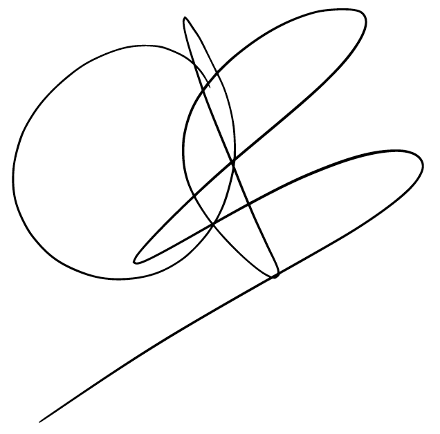

I’m Caitlin—an energy analyst and data scientist with a background in applied mathematics, a passion for clean energy, and a strong commitment to public service.
I’m currently moving into a role focused on energy markets at Pacific Gas & Electric Company. Previously, I’ve worked in energy efficiency research at Lawrence Berkeley National Laboratory, alongside roles that span public service, customer-facing work, and technical support. Across these experiences, I’ve built strengths in statistical modeling, financial analysis, technical writing, and cross-functional collaboration.
I aim to bring curiosity, clarity, and a mission-driven mindset to everything I work on. I’m especially motivated by roles at the intersection of data, policy, and climate—where rigorous analysis can inform better decisions and create real-world impact.
Outside of work, I enjoy spending time with my two kitties, good whiskey, camping and backpacking, tutoring, and Toastmasters (in no particular order).
Please have a look around my website and send me an email!
– Caitlin
